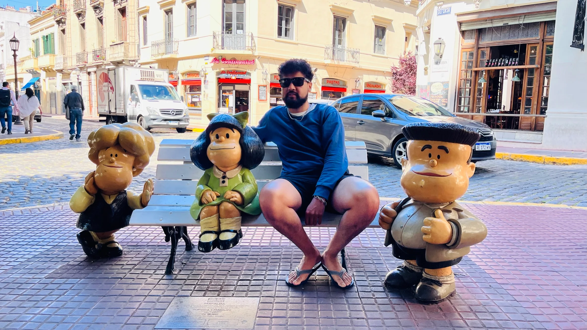
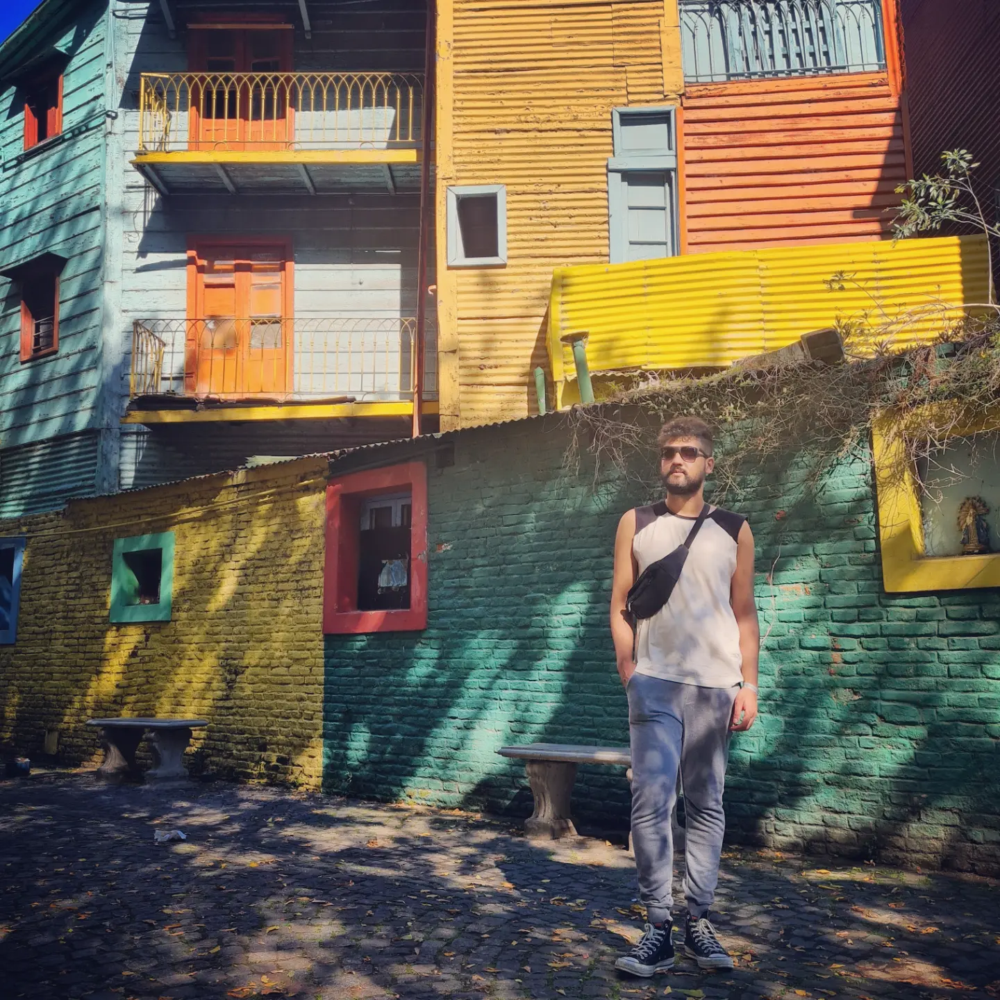

Apesar dos altos preços, Buenos Aires ainda oferece uma infinidade de atrações gratuitas ou de baixo custo — perfeitas pra quem quer explorar a cidade com autenticidade, sem esvaziar o bolso. O melhor jeito de montar seu roteiro é dividir os pontos turísticos por região. Neste post, trago os principais lugares gratuitos (ou quase) para visitar, com comentários reais de quem já bateu muita perna por lá.
Obelisco e Avenida Corrientes
Uma visita à Argentina quase sempre começa no clássico Obelisco, localizado no cruzamento da Av. 9 de Julio com a Av. Corrientes. É símbolo da cidade, embora muitos argentinos considerem que existam ícones mais representativos. Em frente, há as famosas letras "BA" — dica: evite a fila e tire a foto de um ângulo lateral, enquanto as pessoas estão se revezando. Não é furar fila, é jogo de cintura.
À noite, a Av. Corrientes vira uma mini Broadway portenha, com teatros e fachadas iluminadas. Tem algo nessa região que sempre me lembra pizza e sorvete — talvez seja o clima boêmio ou a fome depois das caminhadas.

Teatro Colón
A duas quadras do Obelisco está o belíssimo Teatro Colón, uma das casas de ópera mais importantes do mundo. Eu nunca fiz a visita guiada (é paga), mas amigos que foram disseram que compensa mais comprar ingresso para um espetáculo. A experiência é mais completa e os ingressos começam a partir de R$ 40. Só compre com antecedência — esgota rápido.
Microcentro e Calle Florida
O coração comercial da cidade. O Microcentro é onde fica a famosa Calle Florida, cheia de lojas, artistas de rua e locais para trocar dinheiro. Cuidado com notas falsas — como no Brasil, dá pra identificar pelas marcas de segurança. Eu costumo trocar sempre no mesmo lugar, e nunca tive problema. A região mistura arquitetura clássica, movimento intenso e bons preços para almoço — afinal, é zona de trabalho. Mas atenção: furtos aumentaram nos últimos anos, então vale redobrar os cuidados com pertences.
Plaza de Mayo, Catedral e Casa Rosada
A Plaza de Mayo é o marco histórico e político de Buenos Aires. Ali estão a Casa Rosada, sede do governo argentino; a Catedral Metropolitana, onde o Papa Francisco celebrava missas; e o Cabildo, que abriga um museu histórico. Dentro da Catedral está o mausoléu de San Martín, figura central da independência argentina. A cada duas horas ímpares, rola a troca de guarda — e vale assistir.
San Telmo
Do lado da Plaza de Mayo, o bairro de San Telmo respira tradição. Aos domingos, a feira de antiguidades toma conta da região — é uma bagunça deliciosa. Tem de tudo: discos, objetos antigos, comida de rua e muito tango. Os destaques são o Mercado de San Telmo e a estátua da Mafalda. Se quiser evitar multidão, visite em outro dia da semana. Eu sempre evito domingo, especialmente pra comer no mercado ou tirar foto com a Mafalda — não tenho paciência pra fila.
Puerto Madero
Bairro moderno, elegante e à beira do rio, Puerto Madero é lindo — e caro. A Puente de la Mujer é seu ícone arquitetônico. Minha dica é ir no fim da tarde, caminhar, levar sua própria bebida e aproveitar o pôr do sol. O visual compensa.
Recoleta
O principal ponto turístico é o Cemitério da Recoleta, onde está enterrada Evita Perón. Bonito? É. Mas vale mais a pena com guia. A entrada custa quase R$ 90 e só pode ser paga no cartão. E o túmulo da Evita é bem simples e até escondido. Ao redor tem muita coisa boa e gratuita: o Centro Cultural Recoleta, o Museu Nacional de Belas Artes, a Faculdade de Direito e a famosa Floralis Genérica.

Palermo
É o meu bairro favorito, sem dúvida. Palermo é arborizado, jovem e cheio de vida. Nos Bosques de Palermo, você encontra o Rosedal, o Planetário Galileu Galilei, o Parque Ecológico, o Jardim Botânico e o Jardim Japonês (entrada paga, e fila enorme aos domingos). Mais afastado, mas imperdível, está o MALBA (que abriga o Abaporu, de Tarsila do Amaral), vá nas quartas — o ingresso sai pela metade do preço (~R$ 23). À noite, Palermo ferve: tem muitos bares e baladas, sendo a Praça Serrano em Palermo Soho o ponto principal.
La Boca
O bairro La Boca é puro charme. As casas coloridas do Caminito são o cenário clássico da cidade. O La Bombonera, estádio do Boca Juniors, também está lá. Se você ama futebol, uma foto na frente já cumpre o papel, pois para visitar o estádio você tem que pagar. E atenção: casais dançando tango na rua vão te convidar pra foto — que depois será cobrada.
Tigre
Tigre é um clássico bate-volta a partir de Buenos Aires. A cidade é famosa pelos passeios de barco no delta do rio. Os passeios básicos custam cerca de R$ 100. Já fiz um que incluía almoço e achei furada: comida ruim e preço alto. Melhor almoçar na cidade depois do passeio.
Extras Imperdíveis
Para além do óbvio, Buenos Aires esconde tesouros que muitos turistas deixam passar:
- Centro Cultural Kirchner (CCK): Um gigante prédio com diversas opções culturais gratuitas.
- Congresso Nacional Argentino: Uma belíssima arquitetura que vale a visita.
- La Plata: Se tiver tempo, visite esta cidade na região metropolitana, com a maior catedral da América do Sul — e com mirante por R$ 50.
Conclusão
Dá pra passar mais de uma semana em Buenos Aires só explorando lugares gratuitos ou baratinhos. É tudo uma questão de planejamento e disposição. Com esse roteiro, você economiza sem perder a essência da cidade.
Artigos Relacionados


Escrito por Paco Sousa
Nômade digital, especialista em e-commerce e explorador do mundo. Conecto lógica e liberdade. Siga a minha jornada no Instagram.